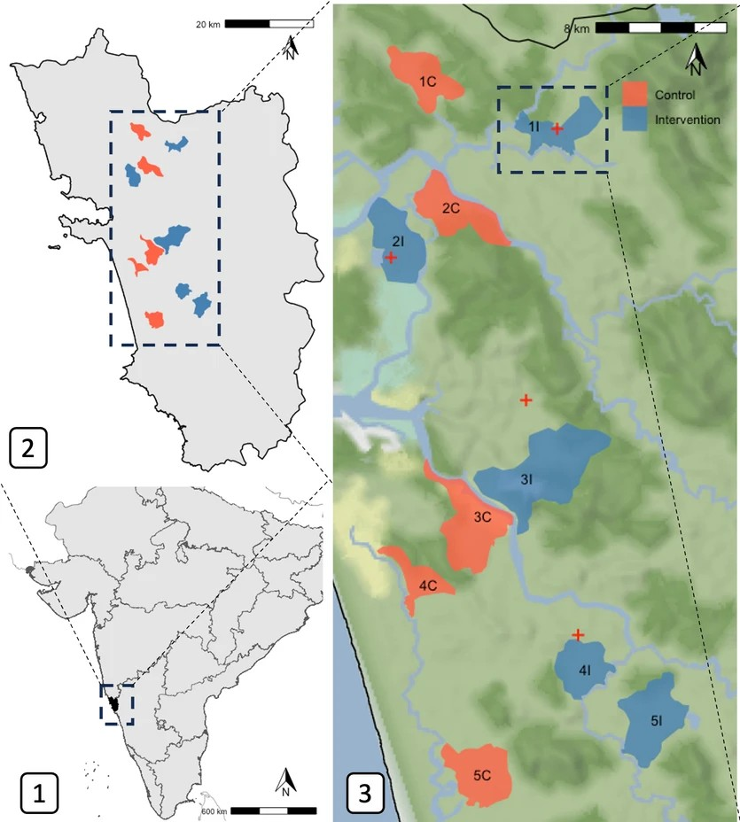

Poisson Regression Article
1 Background

1.1 Understanding the Technique
1.1.1 The Poisson Distribution
Poisson regression extends the linear least-squares regression model to poisson distributed data. Often used to represent physical events occurring, the poisson distribution measures the probability of \(X\) events occuring over a given interval of time, and the average rate of those events occuring is \(\lambda\). For example, the probability of \(X = 6\) hurricanes happening over a year, when the historic average is \(\lambda = \frac{4\, \text{hurricanes}}{\text{year}}\).
The exact probability of \(X\) events occuring over \(\lambda\) can be modeled with:
\[\begin{align*} f(x) = P(X=x) &= \frac{\lambda^xe^{-\lambda}}{x!} \end{align*}\]
We can plot the cumulative distribution function (CDF) to see the probability of \(X\) events occuring for every \(X\), noting how different \(\lambda\) values change that distribution:
remark: notice how as \(\lambda\) increases the distribution is more bell curved shaped.
The poisson distribution is particularly well behaved because of it’s distributions properties. It’s first two moments are given (Soch and The Book of Statistical Proofs contributors 2020):
Expected Value / Mean:
\[\begin{align*} E(x) =& \sum_{x\in \mathcal{X}}^{} x \cdot f_X(x) \\ =& \sum_{x = 0}^{\infty} x \cdot \frac{\lambda^xe^{-\lambda}}{x!} \\ =& \sum_{x = 1}^{\infty} x \cdot \frac{\lambda^xe^{-\lambda}}{x!} \\ = & e^{-\lambda} \cdot \sum_{x = 1}^{\infty} \frac{x}{x!}\lambda^x \\ = & \lambda e^{-\lambda} \cdot \sum_{x = 1}^{\infty} \frac{\lambda^{x-1}}{(x-1)!} \\ \end{align*}\]
Let \(z = x-1 \implies x = z+1\):
\[\begin{align*} E(X) =& \lambda e^{-\lambda} \cdot \sum_{z = 0}^{\infty}\frac{\lambda^z}{z!} \end{align*}\]
Remember that the power series expansion of \(e^x = \sum_{n=0}^{\infty}\frac{x^n}{n!}\).
Finally, \[\begin{align*} E(X) =& \lambda e^{-\lambda} \cdot e^{\lambda} \\ =& \lambda \end{align*}\]
Variance:
\[\begin{align*} Var(X) =& E(X^2) - E(X)^2 \end{align*}\]
If we look at the expectation of \(X(X-1)\):
\[\begin{align*} E[X(X-1)] &= \sum_{x\in \mathcal{X}} x (x-1) \cdot f_X(x) \\ &= \sum_{x=0}^{\infty}x (x-1) \cdot \frac{\lambda^xe^{-\lambda}}{x!} \\ &= \sum_{x=2}^{\infty}x(x-1)\cdot \frac{\lambda^xe^{-\lambda}}{x!} \\ &= e^{-\lambda}\cdot \sum_{x=2}^{\infty}x(x-1)\cdot \frac{\lambda^x}{x\cdot(x-1)\cdot(x-2)!} \\ &= \lambda^2 \cdot e^{-\lambda}\cdot \sum_{x=2}^{\infty}\frac{\lambda^{x-2}}{(x-2)!} \cdot \end{align*}\]
let \(z=x-2 \implies x=z+2\), hence: \[\begin{align*} E[X(X-1)] &= \lambda^2\cdot e^{-\lambda} \cdot \sum_{z=0}^{\infty}\frac{\lambda^z}{z!} \end{align*}\]
recall the power series expansion of \(e^x = \sum_{n=0}^{\infty}\frac{x^n}{n!}\):
\[\begin{align*} E[X(X-1)] = \lambda^2 \cdot e^{-\lambda} \cdot e^{\lambda} = \lambda^2 \end{align*}\]
Since, \[\begin{align*} E[X(X-1)] = E(X^2-X) = E(X^2) - E(X) \end{align*}\] now: \[\begin{align*} E(X^2) - E(X) = \lambda^2 \implies E(X^2) = \lambda^2 + \lambda \end{align*}\]
Finally, by plugging in: \[\begin{align*} Var(X) =& E(X^2) - E(X)^2 \\ =& \lambda^2 + \lambda - \lambda^2 \\ =& \lambda \end{align*}\]
We can verify this numerically. Here I simulate 10,000 poisson distributed datasets with \(\lambda = 1\) and sample size \(n=25\):
Code
set.seed(13)
sims = 10000 #Simulations
lambda = 1 #Frequency Parameter
n = 25 #Sample Size
means <- rep(NA, sims) #Place to store means
vars <- rep(NA, sims) #Place to store variances
for(i in 1:sims){
poisson_dat <- rpois(n, lambda) #Simulate random data
means[i] <- mean(poisson_dat) #Store the mean of the data
vars[i] <- var(poisson_dat) #Store the variance of the data
}The means and variances should both be centered around 1:

Even with some outliers here and there, it checks out.
1.1.2 Poisson Regression
Where the typical linear regression goes as follows: \[\begin{align*} Y_i = \beta_0 + \beta_1 x_{1i} + \beta_2 x_{2i} + \cdots + \beta_{p-1} x_{(p-1)i} + \epsilon_i \end{align*}\]
Since \(Y_i\) is assumed to be continuous, both sides of the equation can range from \((-\infty, \infty)\). To model a variable that is based on counts, and therefore strictly \(>0\), we have to transform the data to sit in the \((-\infty, \infty)\) range, and this can be achieved with a log transformation:
\[\begin{align*} log(\lambda_i) = \beta_0 + \beta_1 x_{1i} + \cdots + \beta_{p-1} x_{(p-1)i} \end{align*}\] where \(\lambda_i\) is the parameter for the Poisson distribution from which the \(i\)th response is drawn.
If all of the data is not measured over the same unit of time, an offset variable is added to the equation: \[\begin{align*} \log(\lambda_i) = \left(\log(T_i) + \beta_0\right) + \beta_1 x_{1i} + \cdots + \beta_{p-1} x_{(p-1)i} \end{align*}\]
Lastly, a critical assumption of poisson regression is that the data behaves like it’s poisson distributed, with equal mean and variance (Figure 2). Otherwise, another type of regression (negative binomial, quasi-poisson, etc.) should be used.
1.2 The Study
In a randomized, multi-site trial, Fielding et al. look to test the efficacy of a sterilisation program aimed at reducing the number of free roaming dogs (FRDs) India (Fielding et al. 2025).
Excess FRDs in an area can increase the spread of rabies and other diseases that disproportionately harm those in rural areas with less access to medical care. Other problems include noise pollution from barking, predation of wildlife, and nitrate pollution from canine excrement.
Catch and release neuter (CRN) programs are seen as a more ethical way to reduce FRD populations in area than lethal methods, which are also unproven to be more successful the CRN.
Previous studies often measure a baseline level of FRDs in an area, implement a CRN procedure, then compare the FRD population after a sufficiently long program. These studies show mixed results in reducing the FRD populations. However, large numbers of external factors and natural fluctuations in animal populations warrant a study with a control area tested before-and-after alongside the test area.

1.3 Goal of Statistical Analysis
Because the count of FRDs can be viewed as a poisson variable, the researchers use a generalized-linear-mixed-model (GLMM) to analyze the effect of the intervention on the FRD populations, using each site as it’s own block. In their case, they look at the amount of dogs along a route of \(x\) km, with the length of the route as the offset in the equation. Also included in the equation are three covariates, whether it was the monsoon season, the proportion of route surveys with rain, and the month of the trial, which the researchers say were selected through a forward-stepwise procedure and retaining those with sufficient changes in the Bayesian Information Criterion (BIC).
For reproduction in this article, I’m looking specifically at the number of puppies counted on each route following the intervention, though the article looks at adults, juveniles, and puppies across several GLMM models.
If we don’t include a random slopes term, which the researchers said was only considered for each model, their regression goes as follows:
\[\begin{align*} log(\lambda_{ij}) &= (\gamma_{0i} + \beta_0) + \beta_1(x_{1ij})I(x_{2ij} = \text{"Sterilized"}) + \\ & \beta_{3}I(x_{3ij} = "Monsoon Season") + \beta_4(x_{4ij}) +\\ & \beta_5(x_{5ij}) + \epsilon_{ij} \end{align*}\]
- \(t_{ij}\) is the time each mouse spends in the correct quadrant
- \(i=1, 2, ..., n\) is the index for each mouse
- \(j=1, 2, ..., n_i\) is the index for the observation on mouse \(i\).
- \(\gamma_{0i}\) is the random intercept for the time each mouse takes to complete the maze
- \(\beta_0\) is the intercept which includes the slope of time for mice in the “Control” treatment
- \(\beta_1\) is the slope of time for mice in the “Calorie Restricted” treatment
- \(\beta_2\) is the slope of time for mice in the “Semaglutide” treatment
- \(\epsilon_{ij}\) is the conditional residual
2 Reproduction of the Study
2.1 Data Cleaning
2.2 Data Summary
2.3 Model Assumptions
2.4 Model Fit
2.5 Model Inference
2.6 Model Interactions
2.7 Conclusions
2.7.1 Summary of the Results
3 Agreements & Disagreements With the Article
3.1 Methods
3.2 Results
4 Acknowledgement
5 AI Use
All of the guidance given by generative AI for this article can be found in this conversation.
References
Fielding, H. R., K. A. Fernandes, Amulya V.R., et al. 2025. “Managing Free-Roaming Domestic Dog Populations Using Surgical Sterilisation: A Randomised Controlled Trial.” Scientific Reports 15 (1): 14221. https://doi.org/10.1038/s41598-025-98990-1.
Soch, Joram, and The Book of Statistical Proofs contributors. 2020. The Book of Statistical Proofs. Https://statproofbook.github.io/. https://doi.org/10.5281/zenodo.4305949.